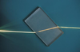

refraction

Definition: In physics, refraction is the redirection of a wave as it passes from one medium to another. The redirection can be caused by the wave's change in speed or by a change in the medium. Refraction of light is the most commonly observed phenomenon, but other waves such as sound waves and water waves also experience refraction. How much a wave is refracted is determined by the change in wave speed and the initial direction of wave propagation relative to the direction of change in speed.
Source: Wikipedia
Wikipedia Page
Wikidata Page
Occurs in: